First steps
Before following along with this tutorial, it is a good idea to get familiar with how to work with samplers. See Getting Started.
Visualizing results
CoherentNoise provides basic support for generating 2-dimensional slices of noise data, which can be conveniently written to disk as an image file, or rendered with tools such as ImageView.jl.
To generate an image that samples from a sampler for each pixel, it is as simple as the following, with sampler being any instance of the supported sampler types:
sampler = OpenSimplex{2}(seed=1)
gen_image(sampler)This produces an array of RGB values using Images.jl. You can then, write it out as an image file with something like:
using FileIO
img = gen_image(sampler)
save(img, "/tmp/noise.png")Which, for this example, should produce something similar to the following image:
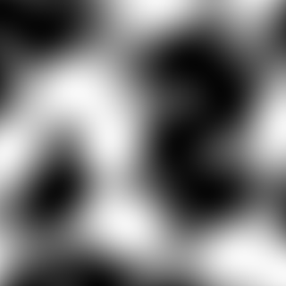
Modifiers
Modifiers are the backbone of producing interesting noise results. Using a modifier, we can alter the input coordinates before sampling, or the output value after sampling. Modifiers are just samplers, so they have no effect until sample is called on them. We can therefor compose long pipelines of noises generators, and finally evaluate the graph, as the end result is always just an ordinary sampler.
For example, taking our previous example from Visualizing results, we can start modifying it with a simple modifier, unary subtraction (negation) of the output values.
sampler = -OpenSimplex{2}(seed=1)
gen_image(sampler)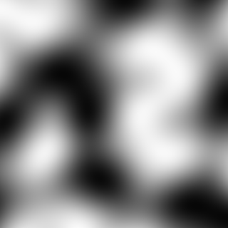
Notice the - operator in front of the sampler constructor; that was the only change. This modifier simply negates the output values.
We can get more advanced, by modifying the output values according to the outputs of other samplers. One such modifier is one created by the mix() function. This function accepts 3 samplers as input, and linearly interpolates between the outputs of the first two samplers, using the third sampler's output as a blending factor.
Let's mix our original sampler together with another new sampler, with interpolation controlled by yet another new sampler. But first, let's see what each of these looks like individually:
sampler1 = OpenSimplex{2}(seed=1)
sampler2 = OpenSimplex{2}(seed=2)
sampler3 = Perlin{3}(seed=1)
gen_image(sampler1)
gen_image(sampler2)
gen_image(sampler3)| sampler1 | sampler2 | sampler3 |
|---|---|---|
 | 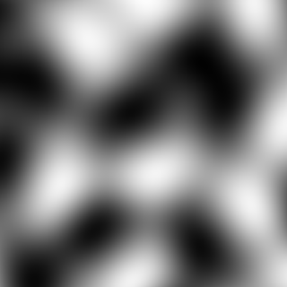 | 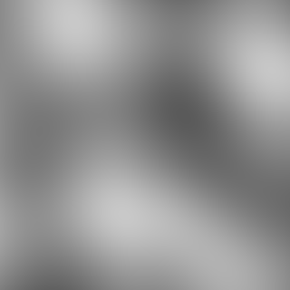 |
Interpolating these with mix is done as follows:
sampler1 = OpenSimplex{2}(seed=1)
sampler2 = OpenSimplex{2}(seed=2)
sampler3 = Perlin{2}(seed=1)
mixed = mix(sampler1, sampler2, sampler3)
gen_image(mixed)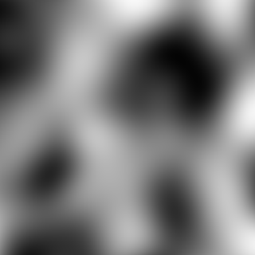
It turns out, this doesn't look very interesting. This is mostly due to the fact that we are zoomed in very close to the generated noise. By default, gen_image() samples from coordinate [-1.0, 1.0] on both the X and Y axes. This can be tuned with the xbounds and ybounds parameters, but rather than doing that, let's use the scale modifier instead.
The scale modifier modifies the input coordinates of a source sampler before it is sampled from. So far we have only seen an output modifying sampler, but one can also modify input coordinates with other modifiers. Here is how we can scale down our previous example. Throughout this tutorial, the full source will be included with each example, to make it easier to copy and paste to your REPL to try things out on your own.
sampler1 = OpenSimplex{2}(seed=1)
sampler2 = OpenSimplex{2}(seed=2)
sampler3 = Perlin{2}(seed=1)
mixed = mix(sampler1, sampler2, sampler3)
scaled = scale(mixed, 0.25)
gen_image(scaled)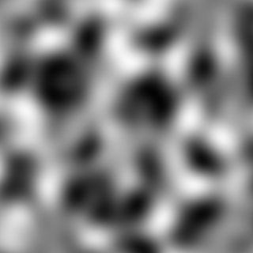
We decreased the scale by 4, making the result look much more interesting.
There are many more modifiers. It is recommended to check out the API Reference for a full list of modifiers (and other samplers). Also, be sure to check out the Gallery for more examples.
Pipelines
Once you start composing different noises together with modifiers, the code gets a little un-manageable and harder to read. We can leverage Julia's builtin pipe operator, or more conveniently, the Chain.jl package's @chain macro.
Let's rewrite our last example using @chain
@chain mix(OpenSimplex{2}(seed=1), OpenSimplex{2}(seed=2), Perlin{2}(seed=1)) begin
scale(_, 0.25)
gen_image
end
Admittedly, this doesn't look that much better, but the more your noise composition grows, the more this variable-free clear flow of control will be appealing. The remainder of this tutorial, as well as the examples in the Gallery will use @chain, but nothing is forcing you to write the pipeline code manually if this style is not for you.
Fractals
Fractals are a type of sampler that applies multiple octaves of a given source sampler, varying their frequency. They make the noise much less regular looking, and offer a good starting point for transforming noises into the desired texture you are trying to simulate, should you be using this library for procedural image generation.
CoherentNoise has a few different fractal sampler types, all of which will be demonstrated below.
We will start with the following regular noise, and apply different fractal samplers to it:
@chain OpenSimplex{3}(seed=1) begin
gen_image
end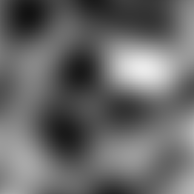
FBM
The most basic example is that with only a source argument supplied.
@chain OpenSimplex{3}(seed=1) begin
FBM{3}(source=_)
gen_image
end
Already, this is starting to look more natural.
All fractal samplers have various knobs to tweak to control the output. Please refer to the API Reference for details, but here are some more examples of FBM using our same source sampler:
@chain OpenSimplex{3}(seed=1) begin
FBM{3}(seed=1, source=_, octaves=3)
gen_image
end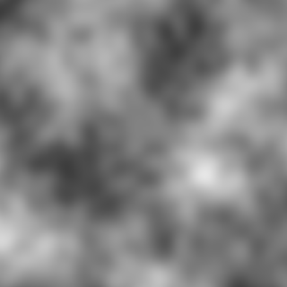
@chain OpenSimplex{3}(seed=1) begin
FBM{3}(seed=1, source=_, frequency=3)
gen_image
end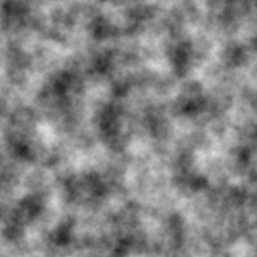
@chain OpenSimplex{3}(seed=1) begin
FBM{3}(seed=1, source=_, frequency=3, persistence=0.7)
gen_image
end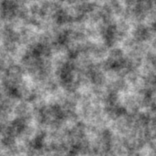
@chain OpenSimplex{3}(seed=1) begin
FBM{3}(seed=1, source=_, frequency=3, persistence=0.7, lacunarity=1.2)
gen_image
end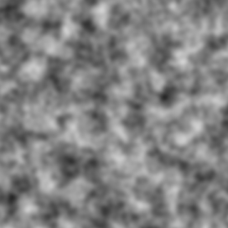
Billow
Billow is another fractal sampler type that produces a billowy appearance. It could be used as the basis for a clouds texture, among many other uses. It supports all of the same parameters as FBM. Here is an example:
@chain OpenSimplex{3}(seed=1) begin
Billow{3}(seed=1, source=_, frequency=2.5, persistence=0.55, lacunarity=1.7)
gen_image
end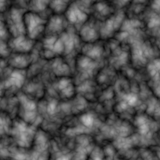
Ridged
Ridged is a fractal (actually a multifractal) sampler type that produces ridges. It could be used as the basis for a a mountainous terrain texture, among many other uses. It supports all of the same parameters as all other fractals, with the addition of an attenuation parameter Here are some examples:
@chain OpenSimplex{3}(seed=1) begin
Ridged{3}(seed=1, source=_, frequency=2.5, persistence=0.4, attenuation=1)
gen_image
end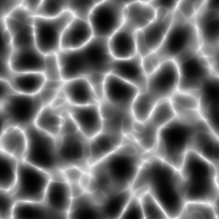
@chain OpenSimplex2S{3}(seed=1) begin
Ridged{3}(seed=1, source=_, octaves=6, frequency=1.8, persistence=0.48)
gen_image
end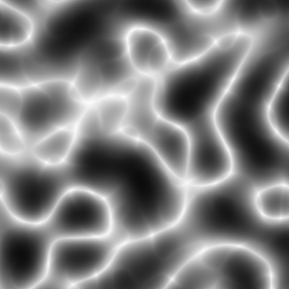
There are a couple other fractal types they we didn't go over, but feel free to experiment with them. Their interface is the same as any other fractal type.
Adding color
CoherentNoise works in combination with ColorSchemes.jl to add color to generated images. To do so, just pass the colorscheme keyword argument to gen_image with any color scheme provided by ColorSchemes.jl, or your own. Adding some color to the last Ridged fractal example looks like this:
@chain OpenSimplex2S{3}(seed=1) begin
Ridged{3}(seed=1, source=_, octaves=6, frequency=1.2, attenuation=1.3, lacunarity=4.5, persistence=0.58)
gen_image(_, colorscheme=ColorSchemes.terrain)
end
Here is the same thing with the noise output negated with the unary - modifier:
@chain OpenSimplex2S{3}(seed=1) begin
Ridged{3}(seed=1, source=_, octaves=6, frequency=1.2, attenuation=1.3, lacunarity=4.5, persistence=0.58)
-
gen_image(_, colorscheme=ColorSchemes.terrain)
end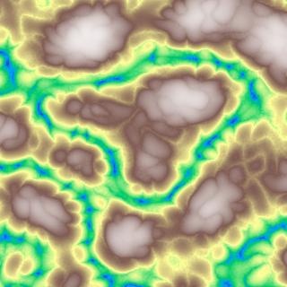
That looks pretty interesting. With a bit more work, you could get it to look much more realistic and terrain-like. For example, to make it more arid, you can simply add an abs modifier:
@chain OpenSimplex2S{3}(seed=1) begin
Ridged{3}(seed=1, source=_, octaves=6, frequency=1.2, attenuation=1.3, lacunarity=4.5, persistence=0.58)
-
abs
gen_image(_, colorscheme=ColorSchemes.terrain)
end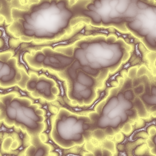
That concludes the basic tutorial. Feel free to experiment with complex noise pipelines, and submit your results as a pull request to be included in the Gallery section!